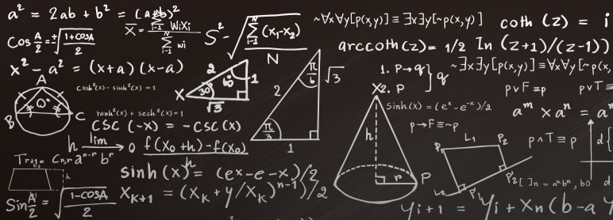

Conjuntos numéricos são coleções de números que possuem características semelhantes. Eles nasceram como resultado das necessidades da humanidade em determinado período histórico
O conjunto dos Números Naturais foi o primeiro de que se teve notícia. Nasceu da simples necessidade de se fazer contagens, por isso, seus elementos são apenas os números inteiros e não negativos.
O conjunto dos números inteiros é uma ampliação do conjunto dos números naturais. Ele é formado pela união do conjunto dos números naturais com os números negativos.
O conjunto dos números racionais nasceu da necessidade de dividir quantidades. Portanto, esse é o conjunto dos números que podem ser escritos na forma de fração.
 Funções de Primeiro GrauUma função é uma regra matemática que relaciona cada elemento x, de um conjunto A, a um único elemento y, de um conjunto B. Os conjuntos A e B são conhecidos, respectivamente, como domínio e contradomínio. Já x e y são conhecidos, respectivamente, como variável independente e variável dependente, pois o valor de y sempre dependerá do valor de x.
Assim, as funções do primeiro grau são regras que relacionam cada elemento de um conjunto a um único elemento de outro cuja variável independente é uma potência de expoente 1. O grau de uma função sempre é dado pelo maior expoente da variável independente e, no caso das funções do primeiro grau, o maior expoente é 1.
Funções QuadráticaA função quadrática, também chamada de função do segundo grau, é expressa como f(x) = ax² + bx + c ou y = ax² + bx + c, sendo que os coeficientes "a, b e c" números reais e "a" diferente de 0
De modo geral, as funções possuem dois elementos básicos: 1) domínio, que corresponde ao conjunto dos valores possíveis das abscissas (x) e 2) imagem, que é o conjunto de valores das ordenas (y), estabelecida pela aplicação de f(x)
Já o grau da função é determinado de acordo com o maior expoente da variável x. No caso da função quadrática, dois é o mais expoente de x. Mas atenção! Se em uma função não houver nenhum expoente na variável x significa que ela é do primeiro grau.
Geometria PlanaA geometria plana estuda o comportamento de estruturas no plano, a partir de conceitos básicos primitivos como ponto, reta e plano. Estuda o conceito e a construção de figuras planas como quadriláteros, triângulos, círculos, suas propriedades, formas, tamanhos e o estudo de suas áreas e perímetro
ProbabilidadeProbabilidade é um ramo da Matemática em que as chances de ocorrência de experimentos são calculadas. É por meio de uma probabilidade, por exemplo, que podemos saber desde a chance de obter cara ou coroa no lançamento de uma moeda até a chance de erro em pesquisas.
Para compreender esse ramo, é extremamente importante conhecer suas definições mais básicas, como a fórmula para o cálculo de probabilidades em espaços amostrais equiprováveis, probabilidade da união de dois eventos, probabilidade do evento complementar etc.